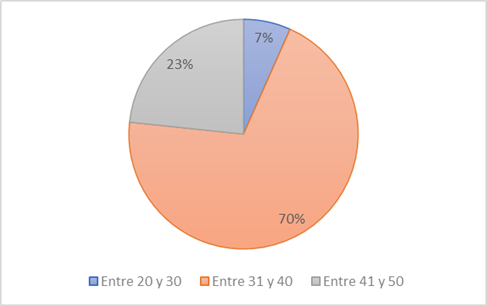
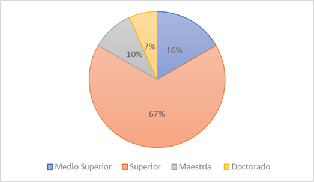
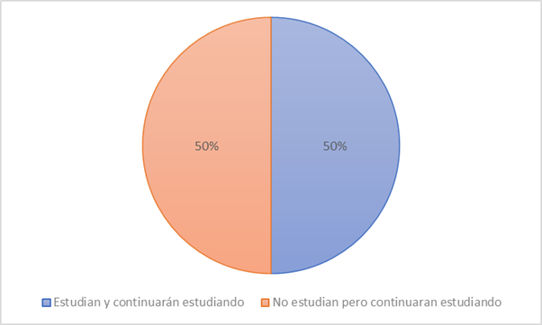
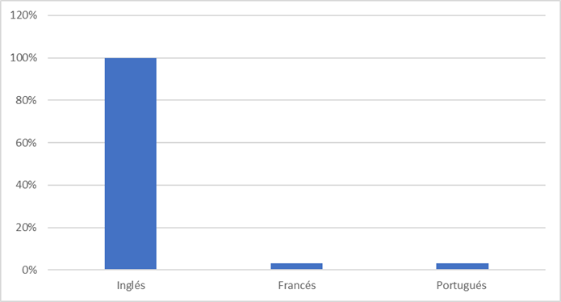
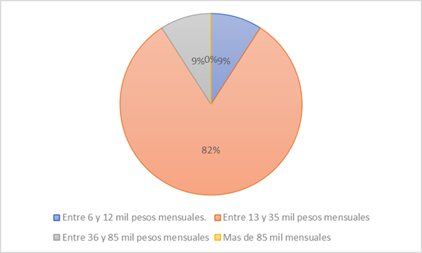
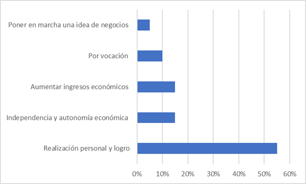
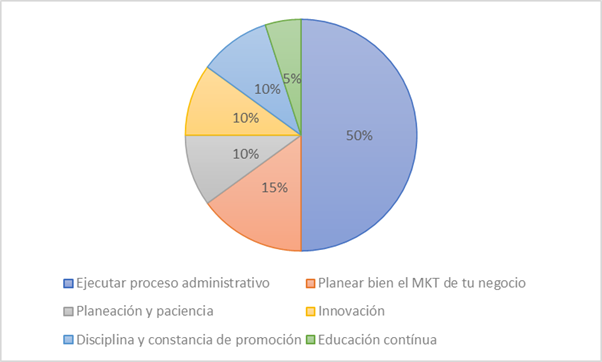
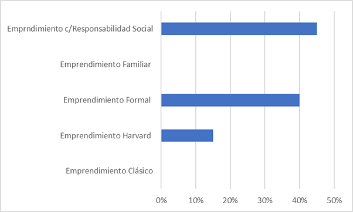

PERSPECTIVA
DE INNOVACIÓN PARA UN MODELO DE EMPRENDIMIENTO BASADO EN LA CREACIÓN DEL VALOR.
Dr.
Raúl Junior Sandoval Gómez y Lic. Edgar Iván Castellanos Sánchez
RESUMEN
Dentro
de los últimos años, el desempleo se ha visto con mayor frecuencia, se ha
vuelto un problema económico en México; el emprendimiento se ha llevado a cabo
en todos los años desde la prehistoria, quizá con otros nombres y formas de
verse, sin embargo, hay diferentes modelos de emprendimiento, y dentro de este
proyecto veremos uno de ellos basado en la creación del valor con perspectiva
de innovación.
A
continuación, en este proyecto, podemos ver de primera mano la teoría que se
llevó a cabo, el instrumento de aplicación, entre otros factores que veremos a
lo largo de este extenso.
INTRODUCCIÓN
La
falta de empleo ha sido, por muchos años, el problema social, económico y
político; más grave de México (Vargas, 2015, pág. 8).
Además,
que no es desconocido que la falta de empleo es una consecuencia aguda de la
pobreza de los países como México; así entonces que la escasez de empleo y la
brecha salarial pueden ser las principales causas del fenómeno del
emprendimiento; ya que la economía mexicana no ha generado el número total de
puestos de empleo que han sido requeridos a lo largo de los últimos 15 años (Mendez, 2020, pág. 245).
Es
así que, a la fecha, una gran cantidad de la riqueza que se genera en México es
resultado del pago de impuestos de los emprendedores (Secretaría de economía,
2019); pues las micro, pequeñas y medianas empresas representan el 99% de las
empresas en México según la Secretaría de economía en 2020; y es a través y por
medio de ellas, que se crean alrededor de 730,000 empleos al año (INEGI, 2019).
Sin embargo, no todos los emprendimientos son exitosos ni satisfactorios
(Kelly, Bosma & Amorós, 2018, pág. 34); ni todos
los emprendimientos generados cuentan con educación e innovación que les
permitan ser guiados y destinados hacia la competitividad y la eficiencia
necesaria para existir en el mercado (Porter, 1980, pág. 90).
Según
estadísticas del INEGI en 2019, cerca del 90% de las empresas desertan de sus
operaciones a tan solo cinco años de su incorporación al mercado, y la mayor
causalidad observada en estos emprendimientos, sugiere que la deficiencia de
estructura y la intangibilidad de un modelo sistemático sostenible, es la
coyuntura administrativa que da lugar a que, en muchos casos, el micro, pequeño
y mediano emprendedor, establezca sus empresas a través del método de ensayo y
error: lo que ocasiona una situación de incertidumbre perpetua. (Puig, 2013,
pág. 23).
A
lo largo del tiempo, los altos niveles de desempleo, y la caja calidad de los
empleos existentes, han creado en las personas, la necesidad de generar sus
propias oportunidades laborales a través del emprendimiento de nuevos negocios.
En muchas ocasiones, el proceso de emprendimiento está basado en el azar, la
prueba y el error, y no en el conocimiento científico; es así como surge la
necesidad de desarrollar un modelo de emprendimiento basado en la innovación
para la creación de valor de los nuevos negocios.
La
palabra emprendedor data del francés “entrepreneur”
que es la misma palabra que se utiliza en el inglés, y ambas derivan del verbo
francés “entreprendre” que significa
emprender. Este concepto se fue ampliando a lo largo del tiempo, y fue así como
emprendedor comenzó a usarse para referirse a las personas que comenzaban
proyectos de construcción de edificaciones militares o religiosas.
Por
otro lado, existen diferentes perspectivas del emprendimiento, tipología de
emprendedores y modelos simples de emprendedurismo,
así mismo, diferentes formas de innovar que más adelante veremos.
TEORÍA
Teoría
Clásica del Emprendimiento: Primera Era.
Este
ciclo de estudio del emprendimiento comienza con la formulación de teorías de
los autores clásicos del siglo XVIII, que indican que el proceso de
emprendimiento funciona sólo, dado que lo único indispensable para el
emprendimiento es el capital, pues es el mercado el que se encarga de todo lo
demás; en este ciclo, los economistas y estudiosos del emprendimiento no se
interesan en el emprendedor; y durante mucho tiempo, se identificó al
emprendedor, como capitalista, patrono o propietario (Amorós, 2008, pág. 121).
Al
continuar con los estudios de la teoría clásica del emprendimiento fue que
Richard Cantillón quien continuó con el estudio del
término de entrepreneur en la 16 literatura económica
e hizo observable que estos emprendedores asumen un riesgo al poner en marcha
sus iniciativas, así fue que definió al emprendedor como “el agente que compra
medios de producción a ciertos precios, para después combinarlos en un producto
que va a vender a precios que son inciertos en ese momento”; así entonces que Cantillón describió al emprendimiento como una función
económica extra especial; pues manifestó que estos emprendedores no son los
poseedores de los recursos que comercializan, sino que, asumen el riesgo de
comprar y vender, bajo la premisa de un beneficio incierto y con ingresos que
corresponden a una naturaleza residual al ser costes fijos, pero ingresos
variables.
Por
último, según Walras (1859, pág. 12) describe en términos generales a la figura
del emprendedor como un coordinador y mediador, al considerarlo uno de los
cuatro agentes económicos, además del terrateniente, el capitalista y el
trabajador, pues mencionaba que sin emprendedor no hay ninguna actividad
productiva, además que no hay cambios; y estos cambios deben presentarse de
manera que la economía se vea beneficiada con el actuar innovador del
emprendedor (Ripsas, 1998, pág. 103).
La
escuela de Harvard: Segunda Era.
La
segunda etapa del estudio histórico del emprendimiento data de los principios
del siglo XX, cuando los historiadores económicos comenzaron a centrar sus
estudios en las empresas y sobre todo, los hombres de negocios; pues se
aseveraba que eran los principales agentes de cambio para la el crecimiento,
expansión y desarrollo económico de los países, y por vez primera se consideró
a los inventores de nuevas tecnologías, como parte de estos agentes cambiarios
que contribuirían al nuevo orden económico que se denominó emprendimiento.
Los
primeros indicios del estudio del emprendimiento en esta era, comenzaron a ser
notorios gracias a N.S.B Gras (1920, pág. 459); quien a finales de los veintes;
abordó de manera amplia el contexto del empresario dentro de la cultura
socioeconómica de los países, y estableció las bases de una nueva cultura, que
destacó por su aclamado nombre: “Business History”.
A
partir de todo el avance teórico de esta etapa, el resultado por excelencia fue
que en 1947 se estableció el primer curso de emprendimiento, denominado “management of new enterprises” en la universidad de Harvard, que estaba
enfocada en prestar atención a las oportunidades de negocios, los riesgos
inherentes a los emprendimientos; los problemas relacionados con el
establecimiento y funciones de empresas nacientes. Fue a partir de este cúmulo
de conocimientos e instauraciones educativas que nació la Harvard Business School, y he ahí el nombre de esta etapa del estudio del
emprendimiento.
Tercera
Era: Pymes y empresas familiares.
Esta
era se configuró entre 1950 y 1979, cuando el objetivo de la investigación del
emprendimiento se centró no solo en el estudio del empresario, la función
empresarial, y la creación de empresas, sino que se crearon vertientes de
estudio como la creación de pymes y empresas familiares.
Según
Kirzner (1997, pág. 326) para que el emprendimiento
surgiera como un campo de investigación, fue necesario que un grupo de
investigadores estuvieran interesados en el mismo tema, y el recopiló
información acerca de los siguientes acontecimientos que cimentaron al
emprendimiento como campo de estudio independiente; pues todos estos
acontecimientos que se detallan tenían como tema central, el estudio profundo
del emprendimiento:
®
En 1956 se ofreció la primera
conferencia sobre emprendimiento, a cargo de la National
Council for Small Business Management Development, en la Universidad de Colorado.
®
En 1958, en Estados Unidos comenzó un
programa universitario denominado Small Business Administration;
para impulsar la investigación sobre la pequeña empresa.
®
En 1970, en Purdue, Estados Unidos,
tuvo lugar el primer congreso científico sobre la creación de empresas, con la
participación de 12 investigadores, entre ellos Ed
Roberts, (1974, pág. 50) quien indicaba que “el futuro de las empresas podría
ser la creación de spin off business para incrementar
las ganancias y capital de las grandes empresas, y reducir los pagos de
impuestos”.
®
En 1973, en Toronto, se celebró la
primera conferencia internacional con temática de creación de empresas.
®
En 1975, en Cincinnati, se celebró el
International Symposium of Entrepreneurship and Enterprise Development
con al menos 230 investigadores interesados en el tema de creación de empresas.
®
Por último, en 1979, debido al auge
del tema del emprendimiento, se fundó la International Council for Small Business.
Todos
estos hechos, fueron entonces, la piedra angular del nacimiento a nivel global,
del interés por estudiar al empresario, al emprendimiento y la creación de
empresas.
Además,
que, universidades a nivel global, y empresas transnacionales comenzaron a
ofrecer cursos relacionados con la creación de empresas y el empresario; pero,
sobre todo, de emprendimiento; y surgieron los llamados conductistas; quienes
estuvieron interesados en definir al emprendimiento y al empresario o
emprendedor.
Cuarta
era: 1980-2000.
El
inicio de esta era se remonta al estudio del emprendimiento y su importancia en
la vida económica de los países, pues entre los años 1969 y 1976; las 500
principales empresas de Estados Unidos, habían dejado de crear puestos
laborales, y fueron las pequeñas empresas las que reinaban en la creación de
empleos formales; pues se estimaba que el 81% de los empleos formales, habían
sido creados en pequeñas y medianas empresas, y por consecuencia se detonaba el
crecimiento económico del país americano (Birch,
1981, pág. 79)
A
partir de 1982, año en el que se descubre la importancia de la creación de
nuevos negocios como fuente para la oferta laboral, tanto la academia como los
gobiernos han dedicado gran parte de su tiempo y sus recursos para tratar de
comprender el fenómeno del emprendimiento y es por eso que a partir de la
década de los noventa; es que el emprendimiento se estableció como una nueva
disciplina académica que se conoce como “entrepreneurship”.
Como
resultado de todos los estudios y aportes teóricos, además de la fundación de
instituciones dedicadas al estudio del emprendimiento, se llegó a la conclusión
que indica que:
“Para
fomentar la cultura del emprendimiento es necesario adoptar medidas que animen
a las personas a ser emprendedores, pero no sólo eso, sino que es menester,
dotarles de cualificación necesaria para tener éxito en sus proyectos; esto
supone reformas en los sistemas gubernamentales, de tasas impositivas, política
económica, sistemas educativos y de formación, cambios culturales, y medidas
para eliminar obstáculos en la creación de nuevas empresas” (Acs, 1999, pág. 32).
Y
se complementa con lo que indica Aernoudt (2004, pág.
127) que declara: “Para fomentar el espíritu emprendedor, es necesario
presuponer el establecimiento de un entorno favorable para la creación y
crecimiento de empresas; por ende, una importante simplificación administrativa
gubernamental, una mejora inconmensurable en el entorno normativo de los
países, y una gran inversión para la educación financiera; sin olvidar el
acceso a programas sociales y comunitarios que doten a los emprendedores de
fondos financieros estructurales para sus proyectos.”
2001-Presente:
Quinta Era.
En
los últimos años, el estudio del emprendimiento ha cobrado gran relevancia para
las ciencias sociales; como fruto de los principales campos de estudio en los
que se fundamenta, tal que la economía, gestión, sociología, psicología,
política e historia económica; forman parte de los campos de estudio que
integran el sustento del emprendimiento en la época actual, y a continuación se
detallan algunos de los últimos aportes en materia de emprendimiento:
A
pesar de que Europa puede ser considerada como la nación madre de los estudios
de emprendedurismo y actividad emprendedora, la
situación actual de conocimiento científico aún se encuentra en estado
adolescente, pues, según Simón (2010, pág. 199), el principal motivo del casi
inexistente interés de los gobiernos europeos por establecer políticas y
estudios que impulsen el emprendimiento se debe a la gran cantidad de países,
universidades, investigadores y enfoques que ya existen en el mundo.
Pero
a pesar de que poco es el interés de los gobiernos europeos por el estudio del
emprendimiento; se reconocen tres mega tendencias europeas que definieron una
parte del emprendimiento en aquel continente:
®
La tendencia en la mayoría de los
países europeos de un interés creciente en la investigación sobre el
emprendimiento y las pequeñas empresas. Aumenta el número de investigadores, el
número de revistas editadas, el número de tesis doctorales y la participación
de los investigadores en contribuciones a nivel internacional. En la mayoría de
los países, la investigación se convierte en más sistemática.
®
Otra de las mega tendencias es la
distinguir claramente entre los conceptos de emprendimiento y empresa; pues
surgieron estudios que se especializaban en diferentes categorías
empresariales: como las empresas familiares, las tecnológicas y spin-off.
®
La última mega tendencia europea se ha
caracterizado por su escasa aportación teórica y su bajo rigor metodológico;
dentro de las investigaciones más recientes se encuentra la de la
conceptualización de modelos de emprendimiento y la explicación del fenómeno
emprendedor en toda Europa.
ANÁLISIS
DE VARIABLES Y DISEÑO DE INSTRUMENTO
Para
poder hacer la exploración acerca de los procesos de emprendimiento que llevan
a cabo las empresas muestrales, se diseñó un instrumento que consta de 23
cuestionamientos entre preguntas abiertas y cerradas, que configuran 3 ámbitos
de interés para esta investigación, tal que, como se detalla a continuación:
El
primer ámbito de interés del instrumento fue diseñado con intención de conocer,
advertir y describir el perfil sociodemográfico de los emprendedores, a
continuación, se detalla a manera de tabla, cada uno de los reactivos que
contiene este apartado.
Y
a este punto, se considera indispensable indicar que este apartado del
instrumento, fue diseñado a partir de la teoría sociodemográfica de la CEPAL
(1997) que indica que, en el ambiente de negocios, economía regional, economía
social, emprendimiento y teoría administrativa, es indispensable conocer con
detalle un perfil de los hacedores de la actividad en cuestión, tal que,
conocer edad, nivel educativo, dominio de idiomas, estado civil, entre otras
variables, son indiscutiblemente necesarias para advertir las tendencias y
hacer proyecciones acerca de aquello que se tenga interés de conocer o indagar
de manera proyectiva y futura.
|
Perfil sociodemográfico del emprendedor |
¿Cuál es tu edad? |
|
|
¿Cuál es tu nivel educativo? |
Actualmente, ¿estudias o tienes planeado
seguir estudiando? |
|
|
¿Dominas algún idioma aparte del natal? |
|
|
|
¿Hace cuánto tiempo que eres emprendedor? |
|
|
|
¿Tu emprendimiento forma parte de tu fuente
de ingresos principal? |
|
|
|
¿Cuál es tu nivel de ingresos personales
obtenido de tu emprendimiento? Sin considerar actividades adicionales y de
acuerdo a la siguiente escala. |
Entre 6,000 y 12,000 Entre 13,000 y 35,000 Entre 35,000 y 85,000 Más de 85,000 |
|
|
¿Realizas alguna actividad alterna a tu
emprendimiento? |
|
|
|
¿Podrías indicarme una descripción general
de tu persona, al desempeñarte como emprendedor? |
|
El
segundo ámbito de interés que contiene el instrumento consta de reactivos que
describen y advierten las representaciones sociales del emprendimiento en cada
uno de los conformantes de la muestra; y entendiendo las representaciones
sociales según la teoría de las representaciones sociales de Moscovici (1988,
pág. 25) como la forma particular de enfocar la construcción social de la
realidad; desde aquellas interpretaciones cognitivas, hasta las dimensiones
sociales de un tema, así entonces, que este ámbito es de relevancia para poder
comprender la realidad del emprendimiento desde el punto de vista de los
propios emprendedores; es decir, con este apartado del instrumento, se
conseguirá, según la teoría citada con anterioridad, el conocimiento de cómo
piensan los emprendedores, que debe ser, que es, y que no es el emprendimiento,
justamente, analizado desde sus propias creencias, ideas y valores, así
entonces, que este apartado marca un precedente en la visión del
emprendimiento, vista, no sólo desde la teoría sino desde la perspectiva social
del emprendedor mismo; con beneficio de tener amplío dominio del significado y
el significante de la palabra emprender, las manifestaciones que sí y no, son
emprendimiento y de validar o no, a las personas que se consideran
emprendedoras.
A
continuación, se presenta la tabulación de los reactivos que configuran este
ámbito socialmente representativo:
|
Representación Social del Emprendimiento |
Desde tu perspectiva ¿Cuáles son las
características que debe poseer una persona emprendedora? |
|
De acuerdo a tu experiencia ¿Cuáles son los
principales obstáculos o problemas que viven las personas que desean
emprender? |
|
|
De acuerdo a tu historia de emprendimiento
¿Cuál o cuáles han sido los motivadores que te impulsaron a llevar a cabo tu
emprendimiento? |
|
|
¿Consideras entonces, que el emprendimiento
es una opción para todas las personas o sólo para unos cuantos? ¿Por qué? |
|
|
Según tu experiencia ¿Qué opinas acerca de
la creatividad y la innovación al momento de emprender? |
Y,
por último, el instrumento cuenta con un ámbito diseñado para conocer el
proceso metodológico de emprendimiento que llevaron a cabo los integrantes de
la muestra, en este caso, todos los reactivos fueron preguntas abiertas que
pudieran dar oportunidad a los encuestados, de expresar libremente sus
opiniones, experiencias, metodologías, vivencias e incluso cuestiones más
intrínsecas como sentimientos o emociones.
Así
pues, que, este apartado de interés funda su existencia en esta investigación,
en dos teorías básicas, la teoría del proceso administrativo de Harvard (2012)
y la teoría de las habilidades básicas del pensamiento de Guevara (2000), que,
respectivamente sirven de guía en esta investigación para saber, lo que a
continuación se detalla:
®
Del proceso administrativo de Harvard
se rescata la idea fundamental de que:
“En toda actividad administrable es de suma
importancia conocer cómo, cuándo, dónde, para qué, por qué, cuánto se planea,
organiza, integra, controla y dirige, pues no hay otro modo de advertir la
metodología, pasos, receta, lógica o método que se ha seguido, más que con las
respuestas a cada una de las etapas de este llamado proceso administrativo”.
Siendo
esta, la premisa principal, se evidencia, que el emprendimiento, entonces, es
un ente, acción o actividad administrable, y por consecuencia, para poder
establecer un modelo a seguir, es indispensable conocer, cada una de las
respuestas para cada uno de los pasos del proceso administrativo
®
De la teoría de las habilidades
básicas del pensamiento se recata la premisa que indica que:
“Las habilidades básicas del pensamiento son
la capacidad y disposición para el desarrollo de procesos mentales, métodos,
conceptos abstractos, metodologías y modelos que contribuyan a la resolución de
problemas de la cotidianidad.”
Por
lo que la observación, clasificación, comparación, relación, descripción,
simbología y abstracción son útiles en este instrumento para conocer los
procesos psicosociales asociados al emprendimiento y modelos abstractos para
lograr emprender con éxito.
Y
tal que se muestra a continuación la tabla con los cuestionamientos, forman
parte del instrumento:
|
Proceso metodológico del emprendimiento. |
Cuéntame ¿Cómo surgió tu idea de emprender? |
|
|
¿Consideraste prudente hacer una
introspección para evaluar tus habilidades personales, sociales y
comerciales? |
¿Por qué? |
|
|
¿Cómo identificaste la oportunidad de
establecer una nueva empresa dentro de la industria en la que se encuentra tu
negocio? |
|
|
|
De acuerdo a tu opinión ¿Cuál o cuáles son
los factores determinantes para que un emprendimiento sea exitoso? |
|
|
|
Si pudieras establecer un
manual/instructivo/receta para emprender; ¿Cuáles serían los pasos por seguir
que se establecerían en ese documento? |
Categorizar los pasos dentro del proceso
administrativo |
|
|
Según tu criterio ¿Un emprendimiento debe
basarse en alguna o algunas de las siguientes características? 1.- Capital o dinero como principal activo. 2.- Objetivo de ser una empresa de tamaño
grande. 3.- Debe perseguir la estabilidad a lo largo
del tiempo. 4.- Debe conformarse sólo con familiares. 5.- Perseguir rentabilidad y responsabilidad
social. |
¿Por qué? |
|
|
Por último ¿Algún consejo, advertencia,
anuncio que te gustaría compartir con los emprendedores inexpertos? |
|
De
todos los ámbitos de interés de este instrumento diseñado para esta
investigación, se cree de importancia y relevancia en demasía, el apartado 3;
pues es este, el que podrá establecer en su mayoría, el proceso metodológico
que los emprendedores han seguido para establecer su nueva empresa; desde
técnicas introspectivas, la detección de oportunidades de negocio, los factores
que son relevantes según cada encuestado, para emprender con éxito, hasta los
pasos uno por uno, que llevaron a cabo al momento de emprender.
METODOLOGÍA
La
metodología utilizada dentro de este proyecto fue el Diseño de investigación
descriptivo documental con análisis transversal con una técnica de carácter
cualitativo.
Metodología
de muestreo.
De
acuerdo con los objetivos de esta investigación que corresponden con elaborar
un modelo de emprendimiento para nuevos negocios, es de relevancia mencionar la
metodología con que se ha realizado el trabajo de campo para poder, paso a
paso, construir este modelo.
De
primera instancia, y de acuerdo con el INEGI en 2021, se seleccionó el nicho
emprendedor con el que se deseaba trabajar, siendo de este modo, que se
eligieron solamente microempresas para poder hacer el muestreo, y para
establecer el parámetro del tamaño de las microempresas, se tiene la siguiente
tabulación.
|
TIPO |
# DE INTEGRANTES |
|
Micro |
0 a 10 |
|
Pequeña |
11 a 50 |
|
Mediana |
51 a 250 |
|
Grande |
251 a 1500 |
Así entonces, se ha seleccionado trabajar con microempresas que
son aquellas que cuentan con un número de integrantes entre 0 y 10; y que, para
esta investigación, además, tengan menos de un año de existencia en
operaciones; pues es de este modo, que cumplen
el perfil de emprendimiento de nuevos negocios, que corresponde con el objeto
de estudio de esta investigación.
Como
se muestra en la tabla, según el INEGI, son emprendimientos de nuevos negocios,
solamente aquellos que tengan hasta 10 empleados, que tengan menos de un año de
comercializar sus productos o servicio en el mercado nacional; así pues, no se
eligió trabajar con pequeñas, ni medianas y mucho menos grandes empresas; sino
con microempresas que son nacientes, con pocos empleados y que aún se
encuentran en periodo de prueba dentro del mercado mexicano, es decir, que aún
no encuentran completamente su perpetuidad o su estabilidad, sino que, aún se
encuentran en fase de adaptación e ingreso al mercado.
En
este sentido, entonces, se ha mantenido contacto con una incubadora en la
Ciudad de México, que trabaja con 100 emprendimientos de reciente creación
dentro de la delegación Gustavo A. Madero, de los cuáles se han seleccionado 41
de ellos para conformar la muestra para aplicación del instrumento diseñado,
con fines exploratorios.
Este
tamaño de muestra se seleccionó de la forma descrita con anterioridad ya que se
considera que, estadísticamente, 41 participantes serían significativos y
suficientes, según Arya&Lander (2008), para poder
hacer inferencia acerca de los procesos de emprendimientos de la población, y
de este modo poder advertir y diseñar el modelo de emprendimiento establecido
como objetivo principal.
Así
entonces la fórmula utilizada para poder hacer el cálculo del tamaño de la
muestra corresponde con la información descrita a continuación; debido a que es
una población finita:
®
El universo se encuentra conformado
con 100 emprendimientos.
®
El nivel de confianza que se propone
para esta inferencia es del 90% al considerarse significativo con esos niveles
de confianza
®
El margen de error aceptado en esta
investigación se ha propuesto en 10% pues, al ser un universo pequeño, se
tendrá entonces que considerar prudente encontrar un error significativo del
10% esto según la literatura revisada en la obra de Arya&Lander
para 2009.
Así
entonces, que, utilizando la fórmula estadística para el cálculo de la muestra,
arrojó que muestralmente los resultados serán
significativos con las respuestas de al menos 41 participantes.
Una
vez establecido el número de emprendimientos que conformaron la muestra, se
pudo tener un detalle del tipo de emprendimiento con el que se trabajaba,
teniendo que, de acuerdo a las declaraciones de los integrantes de la muestra,
el 100% de los emprendimientos poseen un perfil de comercialización de
productos no perecederos, sin ser de primera necesidad, y en la mayoría de los
casos, las empresas no superan el año de vida en el mercado mexicano de la
delegación Gustavo A. Madero, no cuentan con más de 10 empleados y son
fiscalmente responsables; lo que los advierte como totalmente elegibles para
conformar la muestra final y responder los cuestionamientos que se requieran.
Metodología
de aplicación de instrumento.
Para
la aplicación del instrumento y recaudación de información, se utilizó la
plataforma de Formularios de Google, en donde se vació el cuestionario completo
que se diseñó como instrumento, además que, por seguridad de la información;
debió aplicarse un protocolo de ética (se adjunta en anexos) que se entrega por
escrito para que sea firmado por el encuestado, pero debido a la situación
sanitaria actual, únicamente se redactó parte de este protocolo de ética en la
descripción del formulario.
El
levantamiento de información mediante el formulario se llevó a cabo durante
todo el mes de diciembre de 2021, debido a que así fue requerido por la mayoría
de los emprendedores pertenecientes a la muestra.
Es
importante destacar, que para poder enviar las respuestas finales de este
formulario, debían responderse todas las preguntas sin excepción, aquellas que
fueran abiertas, cerradas, de múltiple elección o numéricas, ya que de otro
modo, era imposible finalizar el cuestionario, y en este sentido, se decidió de
esta manera para poder garantizar que las respuestas fuera obligatorias y no
existieran sesgos o falta de información en alguna o algunas preguntas; con la
finalidad de que al momento de analizar los resultados, estos fueran lo más
cercanos posibles a la realidad de la muestra y que no presentaran huecos de
información.
RESULTADO
Posterior
de hacer la investigación, hacer le diseño del instrumento que aplicamos, y de
igual manera aplicarlos, tenemos al fin los resultados de la aplicación del
instrumento los cuales fueron los siguientes:
Del
perfil sociodemográfico el emprendedor.
De acuerdo con el reactivo 1 que explora el
género del emprendedor, se reporta que, de 41 encuestados, el 70% son hombres
con 29 emprendedores; mientras que sólo existieron 12 mujeres emprendedoras que
representan el 30% restante de la muestra.
La estadística del reactivo 2 indica que, de
41 emprendedores que conformaron la muestra, sólo el 7% se encuentra en un
rango de edad entre 20 y 30 años con un valor absoluto de 3 participantes;
mientras que, con el mayor porcentaje, los emprendedores entre 31 y 40 años
suman el 70% con un total de 29 participantes, y con el 23% de participantes (9
personas) se ubican en un rango de edad entre 41 y 50 años. Lo que puede
denotar el hecho de que los emprendedores en general toman la decisión de
emprender en un rango de edad mayormente entre los 31 a sus 40 años. Se adjunta
la tabla resultante.

De acuerdo con el reactivo 3, la distribución de nivel de
estudios para la muestra es la siguiente:

La mayoría de los emprendedores de la muestra
tienen el último nivel de estudios concluido correspondiente al nivel superior
educativo (licenciatura o ingeniería), siguiente de aquellos que sólo cuentan
con el nivel medio superior (bachillerato), en tercera posición se encuentran
aquellos que cuentan con maestría concluida y por último con tan sólo el 7% se
encuentran las personas que cuentan con un doctorado terminado.
Para el cuestionamiento 4, a pesar de haber
mínimamente 4 opciones de respuesta, los emprendedores decantaron sus
preferencias de estudio de la siguiente manera; se adjunta tabla; pues
declararon; el 50% que estudian y planean seguir estudiando, y el otro 50%
declara que en este momento no estudia pero que planean seguir estudiando.

Para el caso de la pregunta que explora los
idiomas que dominan los emprendedores, el 100% respondió que dominan el idioma
inglés, y que ha sido de mucho beneficio al momento de emprender, sobre todo
por aquellos negocios en que, si bien, no es completamente necesario
comunicarse en inglés, hay aspectos relacionados con la empresa, que requieren
que haya cierto dominio del lenguaje inglés; en este apartado, solamente una
persona (2.4%) declaró dominar idioma francés y portugués, que es el caso de
una de las personas más jóvenes que cuenta con un emprendimiento.

Para los cuestionamientos siguientes, en que
se explora el tiempo de vida de su emprendimiento, el 100% de los emprendedores
declararon que no cuentan con más de un año de vida a partir de que nació su
empresa; que su emprendimiento forma parte de su fuente de ingresos principal,
que no tienen actividades alternas que les generen ingresos monetarios, y se
detalla a continuación el nivel de ingresos de los emprendedores.

Resulta entonces, que el 9% de la muestra
recibe de ingresos netos mensuales un aproximado de entre $6,000 a $12,000; la
gran mayoría de los emprendedores recibe entre $13,000 y $35,000 pesos
mensuales, nuevamente el 9% de la población genera ingresos netos entre $35,000
y $85,000 pesos mensuales; sin embargo, ninguno de los emprendedores logra
generar más de $85,000 pesos mensuales en su menos de un año de operaciones.
Y para finalizar con el apartado del perfil
sociodemográfico de los emprendedores, el último reactivo, solicitó una
descripción detallada de cada emprendedor, y de acuerdo con los resultados
obtenidos se vaciaron las descripciones en común, en la siguiente lista:
·
Personas
con alto grado de dominio de diversas disciplinas artísticas, técnicas,
científicas y gerenciales.
·
Personas
arriesgadas con alto grado de resiliencia, asumidores de riesgos y de respuesta
rápida ante contingencias y problemas
·
Buscadores
y perseguidores de la excelencia en muchos ámbitos de su vida
·
Personas
proactivas, responsables, puntuales, respetuosas del tiempo de los demás.
·
Personas
empáticas, disciplinadas, comunicativas, amables, creativas, innovadores.
·
Personas
tolerantes a la frustración, con alto sentido de las finanzas que gusten de la
comercialización en general
En la pregunta abierta que menciona como
instrucción, detallar las características que una persona emprendedora debe
tener, se obtuvieron los siguientes resultados, que de acuerdo con Lara (2022);
dichas características se pueden clasificar en diferentes potenciales humanos
tal como se muestra en la tabla.
|
Potencial
Racional |
Potencial
Emocional |
Potencial
Motriz |
|
·
Constante ·
Planeador ·
Con
educación financiera. ·
De
objetivos claros. ·
Ético ·
Proactivo ·
Oportuno
|
·
Responsable
·
Servicial ·
Agradecido
·
Honesto ·
Humilde
·
Paciente ·
Positivo ·
Resiliente |
·
Audaz ·
Enseñable
·
Creativo ·
Innovador ·
No
conformista ·
Negociador |
Estas características corresponden a lo que
el encuestado considera que una persona emprendedora debe poseer, no así
corresponde con su auto descripción, pues entre las respuestas populares, se
tiene que, los emprendedores pueden advertir que sus personas no convergen al
cien por ciento, entre lo que realmente son y lo que una persona emprendedora
debe ser; es por esta razón que, en el apartado del perfil sociodemográfico,
todos respondieron que estudian o que planean seguir estudiando, pues existe
una fuerte creencia de que a mayor nivel educativo, mayores habilidades
desarrollarán y por consecuencia se acercarán mucho más a lo que un emprendedor
debe ser.
Así entonces que, al continuar con los
resultados del instrumento aplicado se pudo advertir que los emprendedores
declaran que los principales obstáculos que han enfrentado a lo largo de tiempo
de vida empresarial son los que se exponen a continuación:
|
Financiamiento |
30/30 |
|
Impaciencia |
25/30 |
|
Ignorancia del negocio/industria |
15/30 |
|
Falta de innovación |
28/30 |
|
Temor |
30/30 |
Así entonces, que de acuerdo con los
resultados obtenidos de la aplicación del instrumento, como mínimo, el 50% de
los emprendedores han tenido obstáculos en su andar empresarial; desde aquellos
que emprenden en una industria o negocio que no conocen (50%); algunos casos en
los que después de emprender pierden la paciencia por no lograr en el cortísimo
plazo los objetivos que desearon (83%), algunos otros que no conocen medios,
técnicas, alternativas, herramientas e incluso en concepto de innovación (93%)
hasta aquellos que, por temor, y por falta de financiamiento emprenden de
manera insegura (100%).
En el apartado de motivadores para emprender,
se encuentran los siguientes resultados:

Es de este modo, que se obtuvo la información
relativa a motivación que indica que la mayoría de las personas emprenden por
la necesidad de pertenencia, realización y logro personal; unas cuantas más,
por aumentar ingresos económicos y ser independientes, algunas otras, pocas,
por vocación, y las menos, tan sólo por poner en marcha una idea de negocios.
En el siguiente cuestionamiento, se obtuvo un
resultado unánime en el que, se recaban respuestas en común y se obtiene la
siguiente frase concluyente, acerca de si el emprendimiento en una opción para
todos, o sólo para unos cuantos:
“Puede ser una opción general para las
personas que lo deseen, sin embargo, la mayoría no tienen la vocación, la
visión, la paciencia continua y permanente, aunado a que la gran mayoría de la
población prefiere un empleo estable y seguro; que no son capaces de tomar
riesgos ni de tener disposición para emprender, por lo tanto, el emprendimiento
se encuentra orientado para ser tomado como una decisión de aquellas personas
que están dispuestas a pagar el precio que conlleva el emprendimiento, que en
muchas ocasiones no es grato, ni conveniente ni bueno, al principio.”
En la parte de innovación, la mayoría de los
encuestados comentó que es un factor imprescindible para poder emprender; hubo
dos tipos de respuestas:
|
Respuesta 1 |
Conoces la
industria y el negocio que emprendes desde el principio, y desde el
nacimiento de tu empresa buscas la innovación, que es estrictamente necesaria
para el éxito de toda empresa. |
|
Respuesta 2 |
Desconoces
la industria en la que se encuentra tu negocio, y pagas el costo de
oportunidad de aprender sobre la marcha; porque es siempre necesario innovar
para sobrevivir en el mercado mexicano. |
Del proceso metodológico de emprendimiento
En cuanto al advertimiento de la idea de
negocio, es decir, antes incluso de que el negocio mismo naciera, los
emprendedores advirtieron que deseaban emprender, por lo que, comentan que la
detección de oportunidades de negocio en su caso sucedió de manera que la
siguiente manera:
|
Paso 1 |
Identificar la necesidad que se
quería resolver de manera intrapersonal, y establecer un análisis
introspectivo de aquellas habilidades personales, sociales y comerciales con
que se contaban, que fueran de ayuda para el momento de emprender. |
|
Paso 2 |
Comparar los resultados del
análisis introspectivo, con los requerimientos que un negocio demanda en la
realidad, para poder establecer si la idea de emprender es viable y factible
para la persona. |
Cuando se solicitó información acerca de la
identificación de la oportunidad de establecer un negocio en la industria a la
que pertenecen, los encuestados arrojaron estos resultados:
®
Identificación de la oportunidad de
negocios por alguna carencia de la industria en la que se planeó el negocio.
®
Por conocimiento de mi persona, mis
habilidades y mi competencial social, elegí un nicho de mercado que se ajustará
a lo que yo podía ofrecer y así nació mi negocio.
®
Por la saturación de ofertantes de
servicios específicos, pero la poca oferta de profesores que profesionalicen a
esos emprendedores ofertantes de servicios específicos.
®
De acuerdo a las necesidades del
mercado.
Al hacer la exploración con los integrantes
de la muestra, de los factores, que, bajo su criterio, son los determinantes
para que un emprendimiento sea exitoso, se obtuvo que:

La ejecución del proceso administrativo, la
planeación del negocios y la paciencia se creen factores determinantes pues las
ventas y monetizaciones no son inmediatas, por lo que hay que siempre tener
disciplina, rutinas y constancia en la mercadotecnia y la promoción de los
productos, además de siempre innovar, y no olvidar que la educación continua es
lo que ayudará a lograr estos factores que desde la perspectiva de la muestra
de esta investigación, son los determinantes para emprender exitosamente y ser sostenible
a lo largo del tiempo.
Para poder advertir inicialmente un proceso
metodológico de emprendimiento, se pidió, mediante el instrumento diseñado, que
los emprendedores configurantes de la muestra,
detallaran un manual, receta o instructivo, que creyeran conveniente y con
contuviera los pasos a seguir para establecer un emprendimiento, y de todas las
respuestas, de obtuvieron los pasos en común, que se mencionaron y se obtuvo la
información siguiente:
®
Conocer las habilidades, aptitudes,
destrezas y actitudes que definen a tu persona.
®
Estudiar el mercado en el que se desea
posicionar el emprendimiento para advertir o identificar una oportunidad de
negocios dentro una industria que se conozca o que se esté dispuesto a conocer.
®
Establecer el o los motivadores que
guiarán las acciones y esfuerzos personales, además de responder los
cuestionamientos ¿Qué quiero lograr, para qué quiero lograrlo y en cuánto
tiempo quiero lograrlo?
®
Realizar el proceso administrativo con
enfoque proyectivo para el nuevo negocio con apoyo de alguna metodología
conocida como el modelo Canvas, sin olvidar el establecimiento de la misión,
visión, objetivos y políticas del negocio naciente.
®
Iniciar la puesta en marcha del
negocio.
®
Llevar a cabo fielmente la planeación,
organización, dirección y control del emprendimiento.
®
Dar seguimiento a los KPI´s de la organización para establecer estrategias de
acción y siempre encontrarse dispuesto a sortear contingencias.
®
Identificar tendencias en cada aspecto
de la organización para mapear y prever escenarios futuros, y corregir aquellos
escenarios no convenientes para el negocio.
®
Advertir y tomar las oportunidades de
innovación y expansión del negocio.
®
Abandonar el proyecto cuando sea
insostenible, infactible o no se desee continuar.
Casi por finalizar el instrumento y la
recaudación de información, se exploró la configuración de la propuesta de
valor de los emprendimientos conformantes de la muestra, con intención de
ubicar cada emprendimiento, dentro de la taxonomía que se ha mencionado en el
capítulo 1 en el tema de evolución histórica del emprendimiento, y los
resultados que se obtuvieron fueron los siguientes:

Con el 45% del total de la muestra, los
emprendimientos convergen con un perfil de emprendedores con responsabilidad
social, mientras que los emprendedores formales con el objetivo principal de
ser estables a lo largo del tiempo según Díaz y Veciana
(2018) suman el 40%, y para el caso de los emprendimientos con propuesta de
valor tipo Harvard (conformar empresas grandes a lo largo del tiempo) suman el
15% y en esta muestra no se cuentan con emprendedores con tipología clásica ni
familiar, pues corresponde como se puede apreciar en la gráfica al 0% para cada
uno.
CONCLUSIÓN
De acuerdo a
la metodología de expuesta a lo largo del extenso, se puede concluir que esta
investigación es de enfoque mixto, al conjugar las variables cualitativas y las
cuantitativas, que acerquen al investigador a un modelo de emprendimiento
obtenido a través de las respuestas de los encuestados mediante el instrumento
que se ha diseñado para dicho fin.
Así
pues, que, de acuerdo al reporte de resultados, son hombres aquellos que más
emprenden en México, y las mujeres tienen la minoría en este caso; también
puede advertirse que son personas generalmente, entre los 31 y 40 años los que
emprenden con mayor frecuencia, pero también existen personas en rangos de edad
más bajos y más altos, que lo hacen; estás personas entonces, cuentan con un
perfil educativo mayormente conformado por la conclusión de la educación
superior ( Licenciatura o Ingeniería), seguidos de aquellos que solo
concluyeron el nivel medio superior, y algunos pocos cuentan con maestría, y
valores extremos son los que cuenta con un doctorado concluido; esto explica lo
que los emprendedores encuestados comentan, que se tiene como creencia en el
argot emprendedor, que a mayor nivel de estudios concluido, con documento
probatorio y con título y cédula profesional, mayor será la posibilidad de
emprender con éxito, pues se considera que son personas polímatas, muy
estudiadas y capaces de llevar las riendas de un nuevo negocio, por los caminos
del éxito, la prosperidad y la sostenibilidad a lo largo del tiempo.
Estos
emprendedores tienen en planes siempre ser enseñables, situación que puede
verse reflejada en su perfil de estudiante, pues declaran siempre mantenerse al
pendiente de sus estudios y en la actualidad aquellos que no lo hacen planean
en el corto plazo seguir estudiando; pues, como se comenta, es el único medio
por el cuál pueden emprender con éxito: siendo así que mantenerse siempre
actualizado es una de las encomiendas de todo emprendedor.
Para
poder hacer más fácil la labor de emprender, no necesariamente ni en todos los
casos se requiere del dominio de una idioma adicional, o varios, pero en el
estudio de esta muestra, se declaran mucho más cómodos con sus labores,
aquellos empresarios que dominan como mínimo un segundo idioma como el inglés,
sin embargo, también resultan valores extremos que dominan algunos más,
considerándose no sólo polímatas, sino políglotas; y que ofrecen una ventaja
competitiva al mercado por dominar más de dos idiomas.
En
cuanto a la parte cuantitativa del perfil sociodemográfico, la mayoría de los
emprendedores declaró tener ingresos superiores a los $13,000 pesos mensuales e
inferiores a los $35,000 pesos mensuales, lo que los sitúa en un nivel
socioeconómico Medio Bajo (D+) o un nivel Medio (C) y sólo en unos pocos casos
se logra monetizar el emprendimiento para acceder a un nivel C+ con ingresos de
más de $50,000 pesos mensuales.
Conclusivamente,
se encontrará con una descripción detallada del perfil emprendedor, visto desde
la mirada de los emprendedores, en estas descripciones se considera relevante
establecer que se solicitó a los encuestados que dieran una descripción detallada
de su persona, y también una descripción de cómo, desde su perspectiva,
tendrían que ser los emprendedores, situación que no es la misma y que cabe
aclarar, que se tienen información acerca de que, estos encuestados consideran
que objetivamente (al menos en la mayoría de los encuestados) aún no llegan a
tener todas las habilidades, destrezas y características que un emprendedor
debe tener, pero que por esa razón, siempre se encuentran interesados en seguir
aprendiendo y siendo estudiantes, a la par, que la adquisición de nuevos
conocimientos brindará la oportunidad de advertir situaciones proclives para la
innovación y expansión de los negocios a través del tiempo.
Se
detalla también un proceso metodológico de emprendimiento que han seguido los
empresarios muestrales, para poder seguir vigentes en el mercado; y con no más
de un año de su nacimiento, hoy en día se configuran también en su mayoría como
emprendedores con responsabilidad social, formales y de estilo de
emprendimiento Harvard.
A
manera de conclusión, se cuenta en la actualidad de esta investigación, con la
información requerida y planeada desde el inicio de ella, y concordantemente
con la satisfacción de los objetivos generales y particulares, en el capítulo 4
se conformará la propuesta de modelo de emprendimiento de nuevos negocios como
parte de satisfacer las preguntas de investigación y aportar conocimientos
científicos basados en el proceso administrativo que sean de beneficio para la
sociedad.
Reconocimientos
Agradecemos las facilidades otorgadas para llevar a
cabo esta labor al Instituto Politécnico Nacional a través de la Secretaría de
Investigación y Posgrado con los proyectos SIP: 20220233, 20220556 y 20221302.
Además, a la Unidad Interdisciplinaria de Ingeniería y Ciencias Sociales y
Administrativas, Centro de Innovación y Desarrollo Tecnológico en Computación y
Tecnologías Digitales Centro de Investigación y Desarrollo. Asimismo, el
Programa de Estímulo al Desempeño de los Investigadores (EDI) y el Programa de
Estímulo COFAA, PEDD, CONACYT